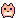

<!doctype html>
<html lang="en">
<head>
<meta charset="utf-8">
<meta name="viewport" content="width=device-width, initial-scale=1">
<title>First Minutes</title>
<link rel="stylesheet" href="../shared/tokens.css">
<link rel="stylesheet" href="../shared/themes.css">
<link rel="stylesheet" href="../shared/base.css">
<link rel="stylesheet" href="../shared/frame.css">
<style>
  .first { position: relative; height: 100%; border-radius: var(--r-panel); background: var(--paper); border: 2px dashed var(--line); overflow: hidden; }
  .first h2 { position: absolute; left: 0; right: 0; top: 22px; margin: 0; text-align: center; font: var(--display-weight) 22px/1 var(--display); color: var(--pink); }
  .first .sub { position: absolute; left: 0; right: 0; top: 52px; text-align: center; font-size: 12px; color: var(--muted); }

  /* the pointer: a soft pulsing stitched ring round the thing to press */
  .point { outline: 3px dashed var(--pink); outline-offset: 7px; border-radius: 14px; animation: pulse 1.4s ease-in-out infinite; }
  @keyframes pulse { 50% { outline-offset: 11px; outline-color: color-mix(in srgb, var(--pink) 50%, transparent); } }

  /* step 1: two boxes that talk */
  .duo { position: absolute; left: 0; right: 0; top: 196px; display: flex; justify-content: center; gap: 120px; }
  .talker { position: relative; display: flex; flex-direction: column; align-items: center; cursor: pointer; }
  .talker .pack-art { filter: drop-shadow(0 10px 14px rgba(0, 0, 0, .35)); animation: wiggle 2.2s ease-in-out infinite; }
  .talker:nth-child(2) .pack-art { animation-delay: .9s; }
  @keyframes wiggle { 0%, 70%, 100% { transform: rotate(0); } 76% { transform: rotate(-6deg); } 84% { transform: rotate(5deg); } 92% { transform: rotate(-3deg); } }
  .talker .say { position: absolute; bottom: 100%; margin-bottom: 18px; width: 190px; padding: 9px 12px; font-size: 12px; text-align: center; }
  .talker .say::after { content: ""; position: absolute; left: 50%; bottom: -8px; width: 12px; height: 12px; margin-left: -6px; background: var(--raised); border-right: 2px solid var(--pink-seam); border-bottom: 2px solid var(--pink-seam); transform: rotate(45deg); }
  .talker.quiet .say { opacity: .55; }
  .talker .lbl { margin-top: 10px; font-size: 12px; color: var(--muted); }

  /* step 2: pick your pet */
  .pickpair { position: absolute; left: 0; right: 0; top: 104px; display: flex; justify-content: center; gap: 36px; }
  .cand { width: 210px; padding: 16px 16px 14px; display: flex; flex-direction: column; align-items: center; text-align: center; transform: rotate(var(--tilt)); }
  .cand img { width: 96px; height: 108px; }
  .cand h3 { margin: 10px 0 2px; font: var(--display-weight) 20px/1.1 var(--display); color: var(--pink); }
  .cand .who { font-size: 12px; color: var(--muted); margin-bottom: 4px; }
  .cand .says { font-size: 12px; margin: 8px 0 12px; min-height: 32px; }
  .cand .btn { width: 100%; }

  /* step 3: send the other one */
  .firstmap { position: absolute; inset: 0; }
  .firstmap svg { position: absolute; inset: 0; width: 100%; height: 100%; }
  .sendcard { position: absolute; right: 30px; top: 110px; width: 250px; padding: 14px 16px; transform: rotate(1.5deg); }
  .sendcard h3 { margin: 0 0 4px; font: var(--display-weight) 18px/1.1 var(--display); color: var(--pink); }
  .sendcard .row { display: flex; align-items: center; gap: 10px; margin: 10px 0 12px; font-size: 12px; }
  .sendcard .row img { width: 48px; height: 54px; }
  .sendcard .btn { width: 100%; }
  .steps { position: absolute; left: 0; right: 0; bottom: 16px; display: flex; justify-content: center; gap: 6px; }
  .steps i { width: 10px; height: 10px; border-radius: 50%; border: 2px solid var(--pink-seam); }
  .steps i.done { background: var(--pink); border-color: var(--pink); }
</style>
</head>
<body>
<div class="app" id="app" data-tab="boxes" data-tabs="boxes" data-nopet="1" data-say=""></div>
<script src="../shared/pixel.js"></script>
<script src="../shared/frame.js"></script>
<script src="../shared/pack.js"></script>
<script>
  const params = new URLSearchParams(location.search);
  let step = Number(params.get("step") || 1);
  const app = document.getElementById("app");

  function go(n) {
    step = n;
    const cfg = {
      1: { tab: "boxes", tabs: "boxes", nopet: "1", say: "" },
      2: { tab: "pets", tabs: "boxes,pets", nopet: "1", say: "" },
      3: { tab: "trips", tabs: "boxes,pets,trips", nopet: "", say: "i'll stay home with you! let's send peach cat down the garden path!" },
    }[n];
    app.dataset.tab = cfg.tab; app.dataset.tabs = cfg.tabs; app.dataset.say = cfg.say;
    if (cfg.nopet) app.dataset.nopet = "1"; else delete app.dataset.nopet;
    app.innerHTML = "";
    const content = mountFrame();
    // no bubble until there's a pet to talk
    if (!cfg.say) content.parentElement.querySelector(".top .bubble").style.visibility = "hidden";
    content.innerHTML = `<div class="first">${[, step1, step2, step3][n]()}<div class="steps">${[1, 2, 3].map(i => `<i class="${i <= n ? "done" : ""}"></i>`).join("")}</div></div>`;
    document.querySelector(".chip.coins").lastChild.textContent = "100";
    document.querySelector(".chip.xp").lastChild.textContent = "0";
    paintIcons(content);
    wire(content);
    applyLook(loadLook());
  }

  function step1() {
    return `
      <h2>two boxes!</h2>
      <div class="sub">something is wiggling inside</div>
      <div class="duo">
        <div class="talker point" data-next>
          <div class="say bubble">psst… over here! something's wiggling in this box!</div>
          ${packSvg(BOXES[0], 110)}
          <div class="lbl">tap to open</div>
        </div>
        <div class="talker quiet">
          <div class="say bubble">me too! me too! i'm in this one!</div>
          ${packSvg(BOXES[0], 110)}
          <div class="lbl">next!</div>
        </div>
      </div>
`;
  }

  function step2() {
    return `
      <h2>pick your pet</h2>
      <div class="sub">one stays with you and lives on your desktop. the other one goes exploring.</div>
      <div class="pickpair">
        <div class="cand sticker" style="--tilt: -2deg">
          
          <h3>lilac blob</h3><div class="who">sleepy eyes, headphones</div>
          <div class="says">pick me! i'm very good at naps!</div>
          <button class="btn primary" data-next>this one stays <span data-icon="heart" data-px="1.3"></span></button>
        </div>
        <div class="cand sticker" style="--tilt: 2deg">
          
          <h3>peach cat</h3><div class="who">round eyes, very curious</div>
          <div class="says">no, pick me! i know where the snacks are!</div>
          <button class="btn primary">this one stays <span data-icon="heart" data-px="1.3"></span></button>
        </div>
      </div>`;
  }

  function step3() {
    const x = 230, y = 250;
    return `
      <div class="firstmap"><svg viewBox="0 0 806 514" aria-hidden="true">
        <text x="30" y="42" style="font: var(--display-weight) 20px var(--display); fill: var(--pink)">lilac blob's map</text>
        <g transform="translate(${x} ${y}) scale(1.4)"><path fill="none" stroke="var(--pink)" stroke-width="3" stroke-linecap="round" stroke-linejoin="round" d="M-20 2 L0 -18 L21 1 M-15 -2 L-14 18 L15 17 L15 -3 M-5 17 L-4 7 L5 7 L6 17"/></g>
        <text x="${x}" y="${y + 50}" text-anchor="middle" style="font: var(--display-weight) 14px var(--display); fill: var(--pink)">the garden path</text>
        <text x="${x + 34}" y="${y - 30}" style="font: 12px var(--body); fill: var(--gold)">home</text>
        <g transform="translate(${x - 150} ${y - 120})"><path fill="none" stroke="var(--muted)" stroke-width="2.2" stroke-dasharray="3 4" d="M-22 8 Q-30 -4 -18 -10 Q-14 -24 2 -18 Q16 -26 22 -12 Q34 -6 26 8 Q14 16 0 12 Q-14 18 -22 8 Z"/><text y="6" text-anchor="middle" style="font: 16px var(--display); fill: var(--lilac)">?</text></g>
        <g transform="translate(${x + 110} ${y + 110})"><path fill="none" stroke="var(--muted)" stroke-width="2.2" stroke-dasharray="3 4" d="M-22 8 Q-30 -4 -18 -10 Q-14 -24 2 -18 Q16 -26 22 -12 Q34 -6 26 8 Q14 16 0 12 Q-14 18 -22 8 Z"/><text y="6" text-anchor="middle" style="font: 16px var(--display); fill: var(--lilac)">?</text></g>
      </svg></div>
      <div class="sendcard sticker">
        <h3>the garden path</h3>
        <div style="font-size: 12px; color: var(--gold)">a short walk</div>
        <div class="row"><span>peach cat is ready to go!</span></div>
        <button class="btn primary point">send peach cat <span data-icon="heart" data-px="1.3"></span></button>
      </div>
`;
  }

  function wire(content) {
    content.querySelectorAll("[data-next]").forEach(b => b.addEventListener("click", () => go(step + 1)));
  }
  go(step);
</script>
</body>
</html>
